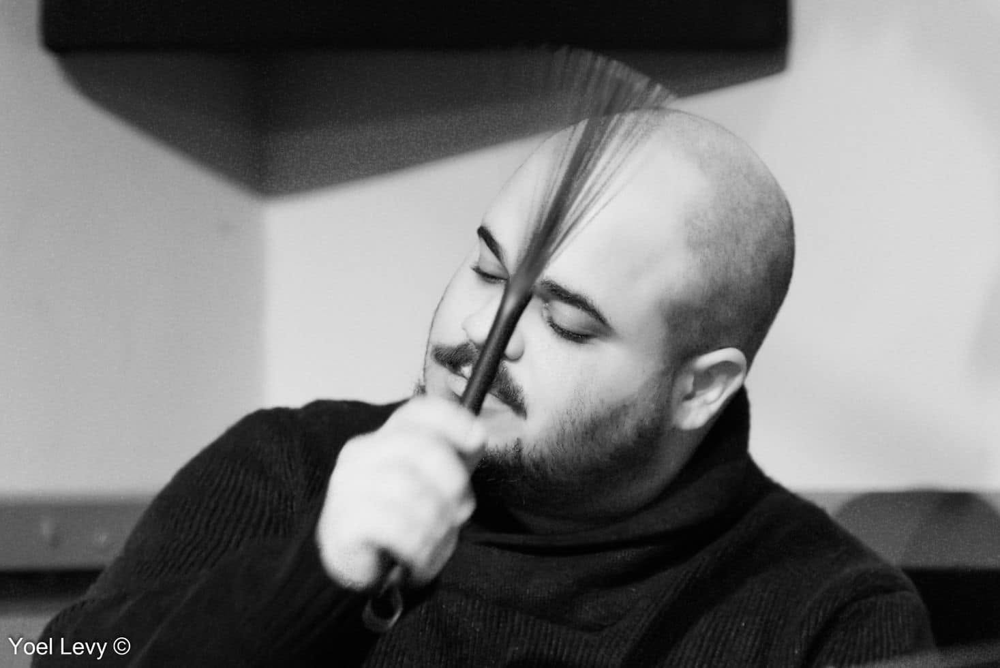

About
Ben Silashi is a drummer and composer based in New York City, known for his work across modern jazz, psychedelic rock, and singer-songwriter music. He is a founding member of KADAWA, a psychedelic jazz-rock trio with guitarist Tal Yahalom and bassist Almog Sharvit — touring across the U.S., Europe, and Israel, leading masterclasses, and releasing three albums to date, most recently Post-Graduation Fees (2025), which earned a four-star review in DownBeat magazine.
Beyond KADAWA, Ben leads his own groups around New York and plays drums for First Light (led by bassist Fima Ephron), Ambrose Getz, and Ashni Dave — with shows at Joe's Pub, Public Records, the 2024 Joshua Tree Music Festival, and a 2025 West Coast tour stop at the San Jose Break Room, presented by San Jose Jazz. Recent work also includes drumming on Omer Leshem's Play Space and Nitsan Kolko's upcoming debut (Adhyaropa Records, November 2026), performing with Margot Sergent at Birdland Jazz Club, and joining Almog Sharvit's band for the France Rocks Summer program at Lincoln Center.
Trained at Thelma Yellin School for the Arts, Ben went on to the international program between the Center for Jazz Studies in Tel Aviv and The New School for Jazz and Contemporary Music in New York, studying with Reggie Workman, Andrew Cyrille, Hal Galper, and Ari Hoenig. He graduated with academic honors on an Excellence Scholarship, and is a recipient of the AICF Scholarship (2014–2015). Earlier in his career, he performed regularly with musicians including Amos Hoffman, Yuval Cohen, Hagai Amir, Erez Bar-Noy, and Gilad Ronen, and produced and arranged an album for singer-songwriter Benny Oyama (2017–2018).